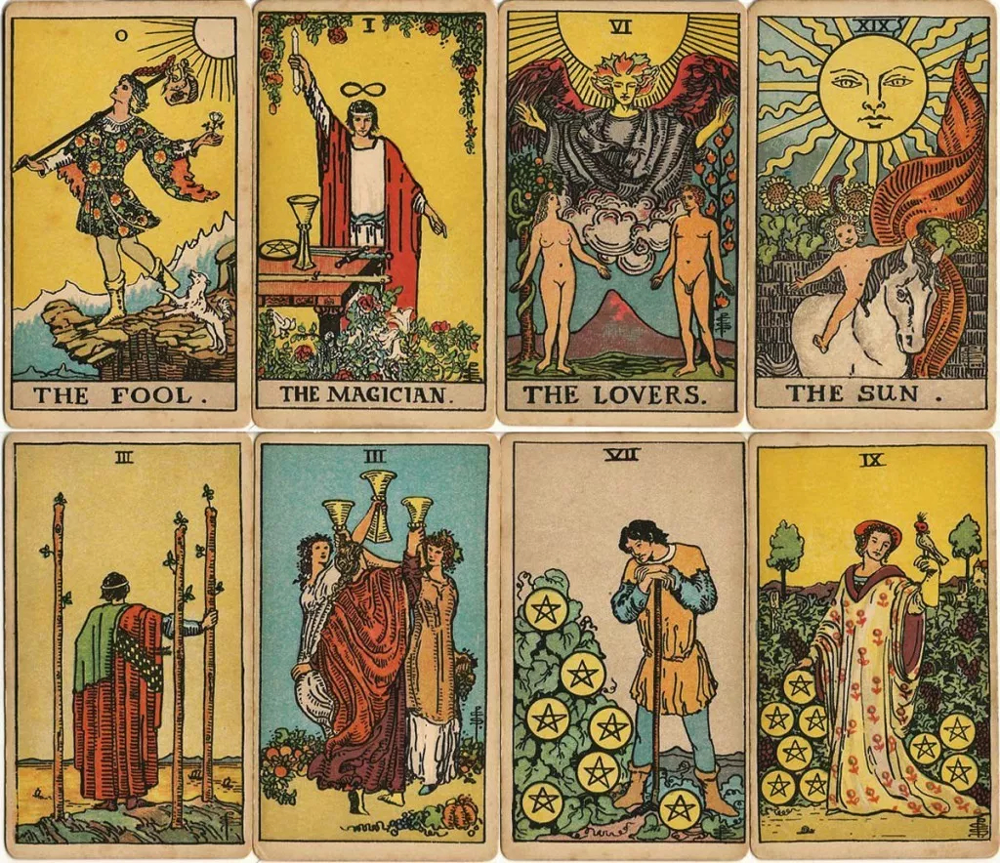
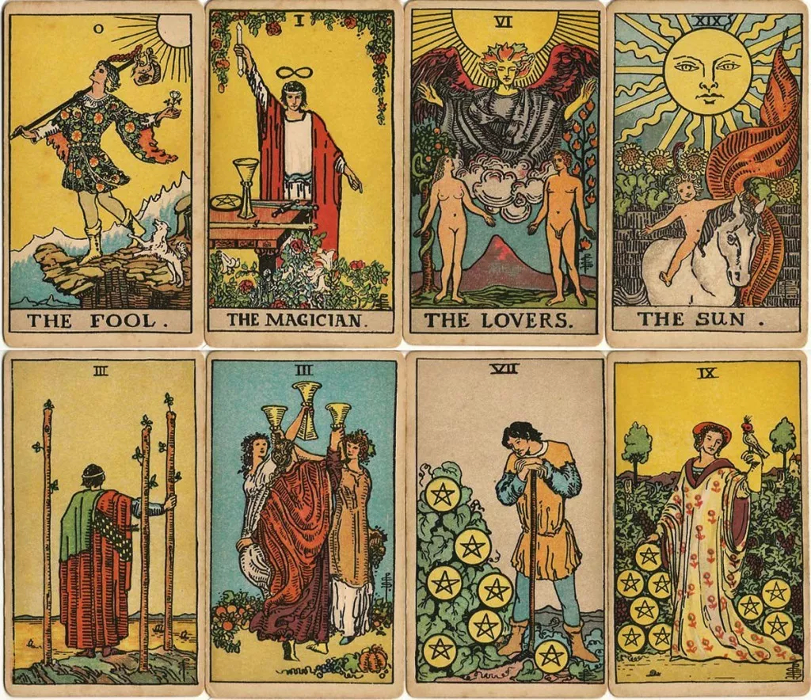

Recently, I've been learning tarot card reading. It's fascinating how the cards seem to offer guidance, but it also makes me wonder: Are these esoteric practices uncovering patterns or principles that humanity has yet to fully understand? While many people see tarot as just a form of entertainment or self-reflection, I believe there may be underlying universal truths that we have yet to grasp. I'm excited to explore this further and see where this journey takes me!
 
